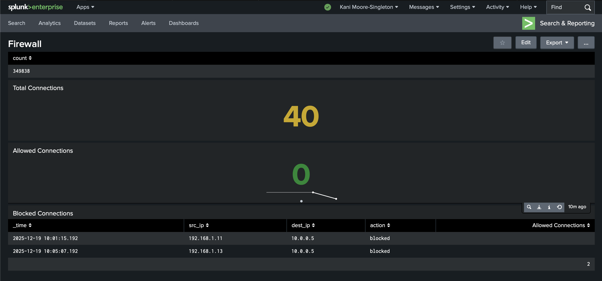

Splunk Network/Firewall Monitoring Dashboard
I created a custom Splunk dashboard to simulate network traffic analysis. I generated a small sample CSV file with connection events, including source IP, destination IP, and whether the connection was allowed or blocked.
After downloading Splunk, and uploading the data into the application, I built a dashboard with three panels showing:
- Total Connections: 5
- Allowed Connections: 3
- Blocked Connections: 2
This hands-on, self learning experience helped me understand how to use Splunk for log analysis and visualization, as well as the basics of SIEM concepts.
Tools: Splunk, Logs, SIEM Concepts


Configured a Kali Linux lab in a UTM virtual machine
I successfully installed and configured Kali Linux in a virtual machine on my Apple Silicon MacBook using UTM. This project demonstrates my ability to set up an isolated, safe lab environment for practicing Linux fundamentals and IT/security skills.
- Installed UTM and configured a VM with appropriate RAM, CPU cores, and virtual disk size
- Downloaded and booted the official Kali Linux ARM64 installer
- Completed the Graphical Installation, including hostname setup, user account creation, and guided disk partitioning
- Installed and configured the XFCE desktop environment to boot into a GUI, ensuring a fully functional system
This hands-on project enhanced my understanding of Linux system administration, virtual machine management, and security lab setup.
Tools: Kali Linux, UTM Virtual Machine, macOS